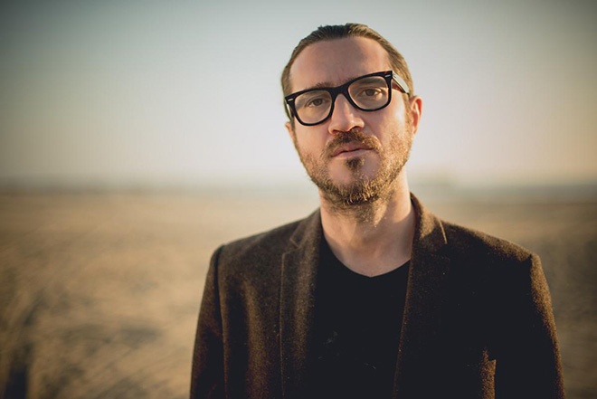

Každý z nás trávi Vianoce s rodinou alebo priateľmi. John Frusciante sa tento rok rozhodol navštíviť vdovu slávneho rockera, Johnnyho Ramone-a, ktorý zomrel v roku 2004 na rakovinu prostaty.
Po odchode z RHCP to Frusciante nemal ľahké. Rozvod s manželkou a smrť jeho najlepšieho kamaráta a herca Rivera Phoenixa, ktorému venoval túto pesničku mali za následok, že Frusciante prestal komunikovať s verejnosťou, rovnako ako prestal vystupovať naživo, k čomu sa už nikdy neplánuje vrátiť. V rozhovore s thumb.com spomenul, ako jeho sólový album Foregrow vôbec nebol určený pre verejnosť. Na otázku ohľadom zmeny tvorby z rockovej hudby na elektrickú sa vyjadril takto: "Je to ťažké vysvetliť to ľudom, ktorí nie sú oddaní hudbe. Vždy, keď trénujem spolu s nahrávkou, alebo robím vlastnú hudbu, dostanem taký zvláštny pocit ako vchádzanie do niečoho rovnako, ako keď vstupuješ do nového domu a si oddelený od vonkajšieho sveta."
A my sa tomu nemôžeme čudovať. Frusciante sa už dlhé roky učí a trénuje používať rôzne nástroje, ktoré mu pomáhajú tvoriť elektronickú hudbu. Zo začiatku s tým mal problémy, kedže ako gitarista bol zvyknutý pracovať iba s jedným nástrojom. Avšak po rokoch tréningu už dokáže takmer dokonale "multitastingovať" medzi mnohými nástrojmi, ktoré môžete vidieťt na obrázkoch.
{kind=link}
{kind=link}
{kind=link}
{kind=link}